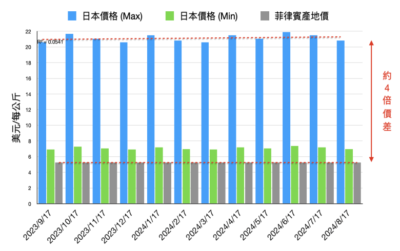
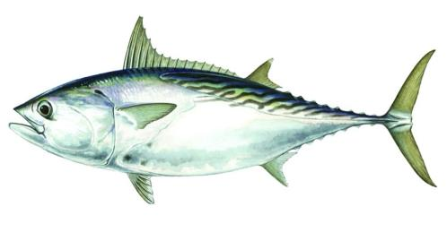
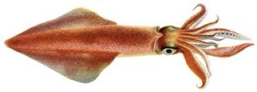
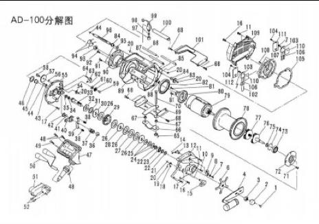
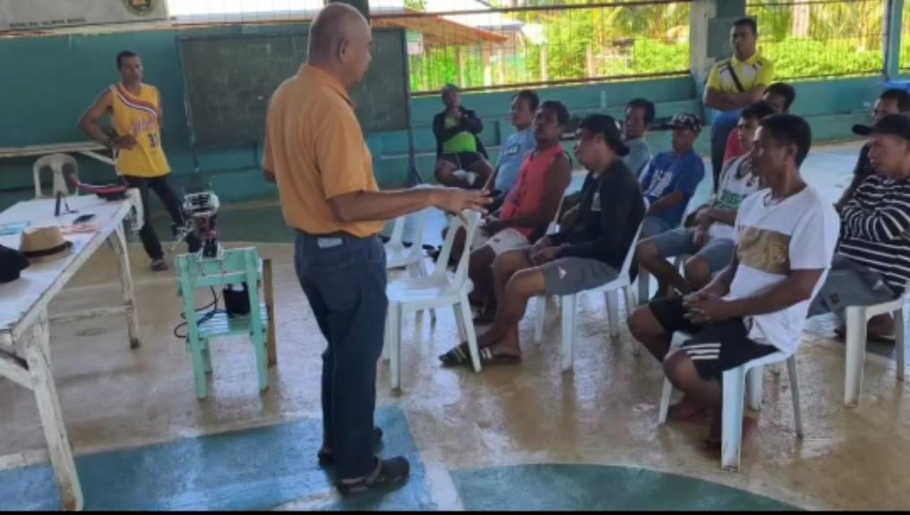
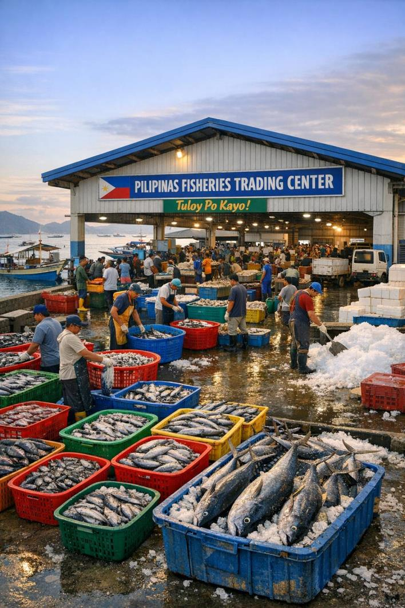
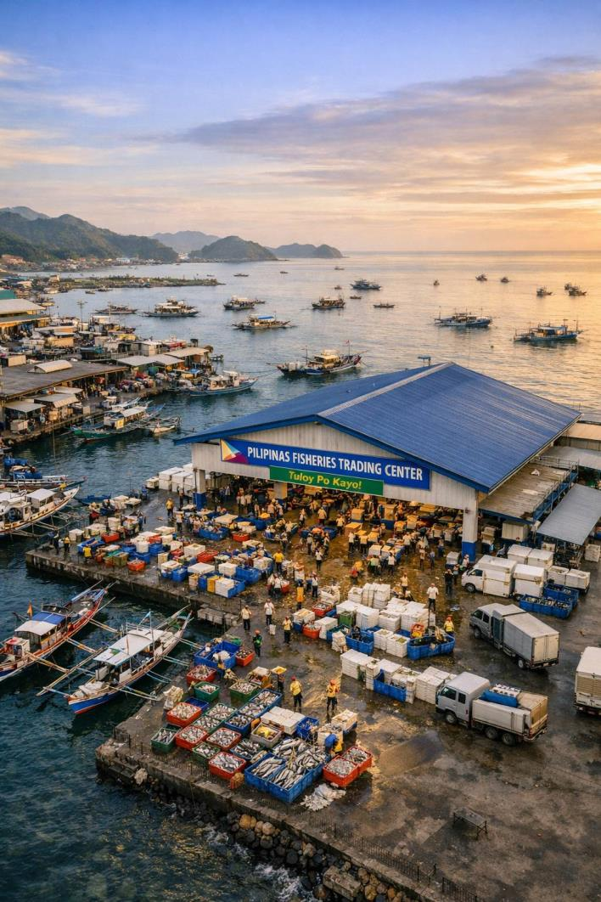
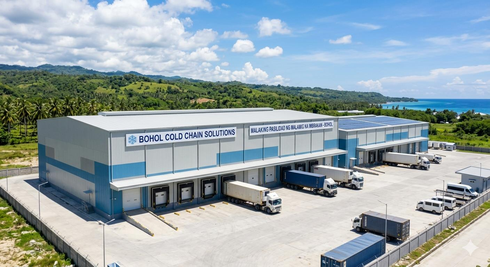
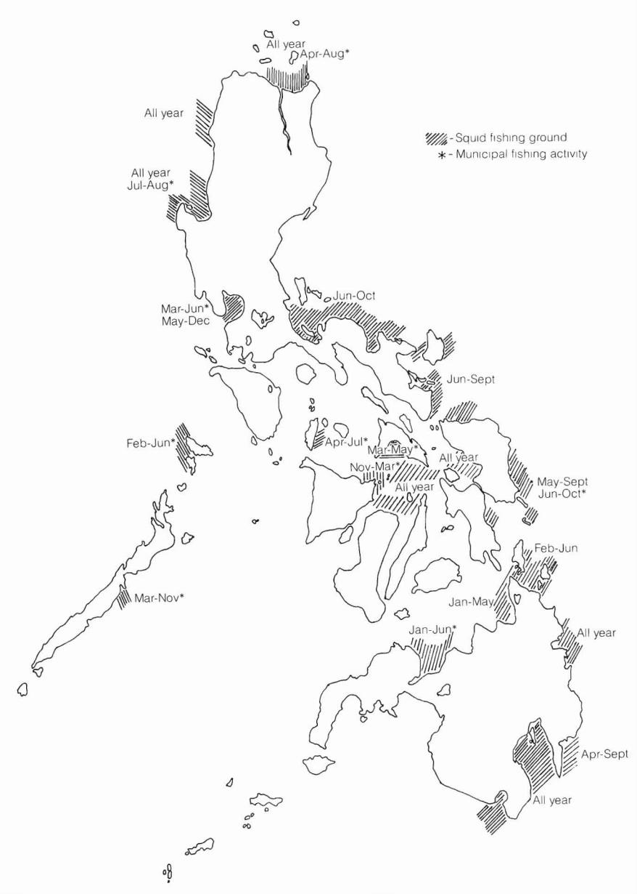
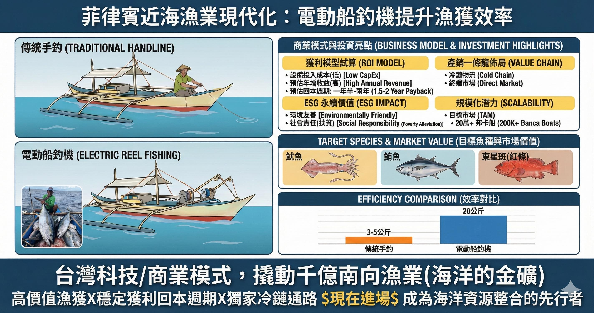

90 天內，跑出第一批可查驗、可投標、可結算的保和島高價漁獲
保和島地方漁業現代化 Pilot
先不急著講三島擴張。這一站只做一件事：把一批魚從出海紀錄、冷鏈證據、sealed bid 到驗收結算，跑成合作方能查、買方敢報價的示範鏈。
與公司投放區域 mapping 計算
× 日本水産物市場 東京中央卸売
3–5 kg → 20+ kg / 船次（raw log 可索取）
保和島正在解的不是單一設備問題
當地漁民有海、有船、有經驗，但捕撈效率、集貨分級、冷鏈保存與通路議價沒有被接成一條可管理的鏈。 示範區要先把這條鏈跑出來，再談擴張與參與方式。
出海效率不穩
傳統手拉線捕撈受深度、人力與天候影響，船次成果難以穩定放大。
漁獲分散難管理
漁獲若缺乏回收、稱重、批次與分級紀錄，後續冷鏈與通路就很難建立信任。
品質價值容易流失
沒有穩定集貨與冷鏈節點，高價漁獲可能在等待、轉手與運送中降級。
90 天只追一個結果：第一批可信交易批次
這一階段不證明整個外銷藍圖，只證明保和島能不能先留下第一組可被合作方查驗的營運證據： 誰出海、哪一批魚、如何分級、怎麼保存、誰願意報價、最後如何結算。
漁民可被管理
建立訓練、出海、回收與責任確認流程；名單與細節依合作階段查驗。
船次留下 raw log
用設備與營運紀錄支撐效率改善，不只用口頭描述船次成果。
漁獲變成 lot
把零散漁獲整理成有批次 ID、重量、來源與分級紀錄的交易標的。
品質有責任鏈
記錄溫度、時間與責任方，讓品質承諾有可追溯依據。
買方進入 sealed bid
讓買方用 sealed bid 表達需求，再用驗收、折讓或結算紀錄關閉責任鏈。
買方不是看故事，是看這批魚能不能被相信
Demo 要讓合作方在 5 分鐘內看懂三件事：這批魚從哪裡來、品質風險由誰負責、買方為什麼敢用 sealed bid 出價。
示範島路徑
設備與作業訓練後開始試運。
時間、作業狀態與船次變成 raw log。
漁獲進入指定節點，建立批次。
品質分級、照片與冷鏈節點同步留下紀錄。
通路買方看到批次證據後進入 sealed bid。
驗收後進入結算；異常則留下責任與爭議紀錄。
平台信任面板
批次來源、重量、分級、溫控狀態與 sealed bid 入口。
證據是否足夠決標、是否需要補文件、誰承擔品質風險。
船次、冷鏈、驗收、折讓與結算紀錄是否能回到同一批次。
哪些證據已經在跑，哪些會依合作階段查驗
這段不是宣稱所有資料都已公開完成，而是把示範區證據拆成可理解的狀態。 合作方可依階段查驗設備、訓練、船次、文件、冷鏈與交易紀錄。
- 設備原型與投放準備
- 漁民訓練流程
- 回收與分成機制
- 設備投放數量
- 漁民 onboard 名單
- 試運船次 raw log
- 政府往來文件
- 合作窗口資料
- 保單 / 設備條款
- 冷鏈節點規劃
- 集散中心合作進度
- 通路洽談狀態
| 證據項目 | 來源 | 狀態 | 可閱層級 | 影響決策 |
|---|---|---|---|---|
| 船次 raw log | 設備 / 營運 | 查驗中 | NDA 後 | 證明捕撈效率與作業穩定度 |
| 批次重量紀錄 | 回收站 / 集貨點 | 摘要可公開 | 合作方 | 證明漁獲可被整理成可交易 lot |
| 分級 / 照片 | 集貨站 / 品質檢查 | Pilot 建立 | 合作方 | 支撐買方信心與報價條件 |
| 冷鏈節點紀錄 | 冷鏈 / 倉儲 | 建置中 | 合作方 | 證明品質保護與責任邊界 |
| sealed-bid demo | 平台流程 | 可展示 | 買方 / 投資人 | 證明私密報價與人工決標模型 |
| 結算 / 爭議紀錄 | 營運方 / 驗收端 | Pilot 目標 | NDA 後 | 證明分潤、折讓與責任歸屬 |
補充閱讀：3 分鐘看懂這門生意
老實說，我本來對漁業一竅不通——只是上網查「魚怎麼從海裡到餐桌」，結果愈查愈驚： 這不是賣魚這麼簡單，是一整條養殖、冷鏈、追溯、結算的產業鏈。 我把入坑路上最有感的 20 件事整理成這份懶人包，作為示範區主線後的產業背景補充。
已是行內人？直接看參與方式「先別管參與方式——這盤子到底多大？我查到的第一個數字就讓我愣住。」
全世界 15% 的動物蛋白，來自海裡
你攝取的動物性蛋白，每 7 口就約有 1 口來自水產；全球有 3.2 億人，超過兩成的動物蛋白靠它。
2022 年，「養」的魚第一次超過「抓」的魚
全球漁業＋養殖總產量 2.232 億噸，其中水產養殖動物產量史上首次超過野生捕撈——產業從「靠天吃飯」轉向「可規劃生產」。
人類愈來愈會吃魚
2022 全球人均水產消費 20.7 公斤，預估 2032 升到 21.3 公斤。需求是長線往上，不是一時風潮。
這門生意的重心在亞洲
全球 71% 的水產消費集中在亞洲。這不是遙遠的歐美市場，是我們家門口最大的胃口。
光是「進口」就 1,640 億美元
2024 年全球水產品進口估約 USD 164B，買家集中在歐盟、美國、中國、日本四大需求中心。
「盤子大我懂了，但錢卡在哪、漏在哪？問題出在『從海到餐桌』那段路。」
抓上來的魚，只有一半直接被人吃掉
全球僅約 54% 漁獲供人類直接食用；估計約 35% 在收成後被損耗或浪費。產量大，不等於有效供應大。
缺冷藏的地方，魚從船上就開始虧錢
南亞、東南亞的小規模沿海供應鏈因缺乏冷藏，損耗常達 15–30%。魚的價值，是被「溫度」一路吃掉的。
產地漁民，常只賺到終端價的三到四分之一
同一條魚，國際終端賣 100，產地往往只拿到 25–33。中間價差被層層轉手、損耗與資訊不對稱吃掉。
痛點不在「抓魚」，在「抓到之後」
捕撈只是起點；分級、冰存、運輸、驗收，每一關都在跟時間和溫度賽跑。慢一步，高價魚就降級成便宜貨。
「養殖過半」對示範區參與者的真正意義
當產量變得可規劃、可擴張、可控品質，水產就從「碰運氣的生意」變成「可管理、可複製的產業」。
「真正讓我開竅的是後面這些——這行最值錢的不是『魚』，是『信任』跟『證據』。」
冷鏈賣的不是冰箱，是一句「品質承諾」
凍品要維持 -18°C 或更低、冷藏鮮魚要 0–4°C。溫度守住了，品質與價格才守得住。
但冷鏈同時是一張電費與設備帳單
冷鏈一邊減少損耗、一邊吃掉能源與設備成本。會做這行的人，賺的是「省下的損耗」大於「多花的冷鏈」那段差。
溫度的傷害是「累積」的
品質看的是時間 × 溫度的累積暴露。冷藏門開太久、運途斷冷半小時、卸貨等太久——每個小破口都在偷走貨的剩餘壽命。
出事第一句永遠是「誰負責？」
供應商、倉儲、平台、運輸、買家——沒有逐段紀錄就只能吵架殺價。講得清責任歸屬的鏈，才談得上信任（chain-of-custody）。
進口大國早就在查「這條魚的身世」
美國 SIMP 要求保留從捕撈到入境的逐段紀錄、留存兩年，涵蓋 1,100＋ 物種；歐盟另有 IUU/CATCH。會做文件的供應鏈，門票就多一張。
「可追溯」正從加分題變成必答題
GDST、FDA Seafood HACCP、Codex 正把「說得清來源與批次」變成進高階市場的基本條件。這是 traceability-ready 的方向，不等於已合規。
未來的成長主角是養殖，不是捕撈
野生捕撈受配額與資源限制，天花板已現；增量幾乎全靠養殖。要押產業成長，要看養殖端的效率與技術。
全球養殖高度集中在十個國家
中國、印尼、印度、越南、菲律賓…十國包辦近九成養殖產量。菲律賓，就在這份名單裡。
機會，就在冷鏈最弱的地方
損耗最重的正是冷鏈最弱的東南亞小規模供應鏈（15–30%）；而菲律賓 2023 產量 4.26M 噸、養殖佔 56%。產量在、損耗也在，補進去的人就把價值撿回來。
把上面這些拼起來，就是這個案子
一個高需求、高損耗、又開始要文件的市場（菲律賓／保和島），缺的正是「智慧捕撈 + 冷鏈 + 證據」這條垂直整合鏈。這是 traceability-ready、HACCP-informed 的起點，不是已合規的終點。
本專欄為產業背景科普整理，引用自 FAO、GLOBEFISH、PSA、NOAA、UNEP 等公開來源（詳見文末資料來源）， 僅供認識產業之用，不構成投資建議、要約或招攬。
為什麼是現在？
菲律賓近海漁業資源豐富但技術落後，國際市場供不應求、產地與終端市場價差顯著。 這是一個結構性失衡的機會。
效率低落
當地漁民仍以傳統手拉線釣魚為主，單次船次漁獲量僅 3–5 公斤。
技術限制
受限於設備與人力，傳統方式多僅能捕撈至 200 米深， 無法因應洋流變化下潛的高價深海魚群。
價值流失
缺乏冷鏈與出口整合，產地價僅國際市場價的 1/3–1/4， 價值大量流失於中間環節。
+ 公司投放區域估算
實際價差依季節 / 規格而異
3–5 kg → 20+ kg / 船次（raw log 可索取）
日本 vs 菲律賓 · 魷魚批發價差
菲律賓魷魚資源豐富，但因冷鏈缺失與出口通路有限，當地收購價遠低於國際終端市場。 透過設備投放、漁獲整合與冷鏈基建，可逐步補捕這段價差。

結構性失衡，本身就是結構性機會。
鎖定高價值經濟魚種
國際市場供不應求、產地價格仍低。鎖定三類具備外銷潛力的經濟魚種， 集中設備投放與冷鏈基建資源。

小型鮪魚
Euthynnus affinis · Little Tuna · Kawakawa
熱帶與亞熱帶沿海淺水區常見魚種。高蛋白、低脂肪，受健康飲食需求帶動， 亞洲與地中海國家需求持續增長。

魷魚
Loligo spp. · Uroteuthis spp.
薩馬島、保和省、蘇祿海等海域分布廣泛。日本、韓國、西班牙、義大利需求穩定。 公司簡報引用之日本豐洲批發價約為菲律賓當地離岸收購價 4 倍 （冷凍 Loligo 等同規格、實際價差依季節、規格與物流條件而定）。
東星斑（紅條）
Plectropomus leopardus · Lapu-Lapu · Coral Trout
菲律賓「Lapu-Lapu」石斑魚統稱，以東星斑最具代表性。馬尼拉、宿霧、長灘島 高級海鮮館主力品項，華人社區終端市場需求穩定。
智慧漁業整合方案
從客製化船釣機投放、漁民教育、漁獲分成回收，到冷鏈出口的垂直整合方案。 設備不只是設備，是與當地共贏的源頭整合機制。
傳統捕撈 vs 智慧設備
傳統手拉線釣魚
- ·單次漁獲僅 3–5 公斤
- ·深度限制 200 米內
- ·無數據紀錄、無遠端控制
- ·受洋流變化嚴重影響
智慧船釣機
- ·20+ 公斤/船次（效率提升 5 倍）
- ·深海作業可達 500 米
- ·Wi-Fi 遠端控制、內建記憶體
- ·模組化、適應不同作業需求

商業模式 · 零門檻加盟與漁獲分成
漁民免購機，公司以設備投放換取 30% 漁獲分成作為租金； 剩餘 70% 漁獲公司有優先採購權，建立穩定源頭與冷鏈通路。
設備投放
公司投放客製化船釣機，提供教育訓練、SOP、保鮮冰塊與維護服務。
漁民使用
漁民零門檻加盟，免購機、免前期投入，僅承擔燃料成本。
漁獲分成
每日設備回收清點，30% 漁獲作為設備租金回流公司。
優先採購
剩餘 70% 漁獲公司具優先採購權，建立穩定通路。

政府合作關係
「保和省近海漁業正面臨關鍵的現代化轉折點。 台灣的智慧船釣設備能為當地漁民帶來實質的效率提升， 也是『藍色經濟』政策需要的合作典範。」
本案政府合作關係屬實。基於合作方現職公職身分，其姓名、職務與往來文件不於公開頁面揭露； 受邀合作方於簽署 NDA 後之查驗階段可一對一查驗。
我們不是賣設備，是投放一批會回本的海上資產。
三階段發展藍圖
從保和島示範區起步，逐步擴展至巴拉望與民答那峨； 從設備投放、集散中心，到冷鏈外銷的完整供應鏈。
智慧設備推廣
客製化船釣機投放、漁民教育訓練、SOP 建立。從保和島示範區起步。
水產集散中心
建立區域集貨中心，整合漁獲、分級、初級加工、文件處理。
冷鏈外銷廠
建置冷鏈基地，串接日本、東亞外銷通路。從內銷階段邁向外銷階段。



三大開發區域
保和島為示範區，驗證模式後擴展至面積 5 倍的巴拉望、15 倍的民答那峨。
* 數字為公司規劃之漁業開發區範圍，非整省土地面積。實際省面積比例：巴拉望約 2.4×、民答那峨約 20×（依菲律賓 PSA 公開資料）。

營運實務與風險控管
真正的護城河，是漁民每天願意回到同一條船。
為什麼是這條賽道、為什麼是現在
2024 全球水產品進口估值；亞太需求中心持續上移， 日本、韓國對東南亞高價物種採購量逐年成長。
菲律賓 BFAR Fisheries Modernization Plan 政策窗口期； 台灣新南向政策 2.0 將水產列為優先合作。
泰國 CP Foods 2023 年水產營收， 證明東南亞 vertically-integrated 水產模式具市場規模。
接下來的示範區參與方式，會以這些 macro 趨勢為背景， 並使用公司保和島示範區資料與菲律賓 PSA / BFAR 統計交叉試算。
示範區參與方式
如果示範區模式跑通，參與者不是只看單次財務結果，而是在參與一套可驗證、可複製的地方漁業現代化模型。 以下試算保留為參與方式的一部分，用來理解不同階段的經濟假設與風險。
- • 以下試算為公司根據保和島示範區初步數據之內部預估， 未經第三方會計師事務所或獨立分析機構審核。
- • 50% / 100% / 300% 為理論情境試算，建立於漁獲量、市場價格、匯率、營運執行皆達假設值之前提； 實際結果可能顯著低於、甚至無法達到情境一（最低使用率試算）。
- • 投資具風險，可能虧損部分或全部本金， 請於投資前自行評估風險承受能力並諮詢專業顧問。
- • 本網站內容為投資資訊參考， 不構成任何形式之投資建議、要約、公開招募或證券銷售文件。
| 情境 | 每組每日 滿載船數 |
每組投資方 分得漁獲 (kg) |
投資方 每日分潤 |
投資方 每年分潤 |
預估 年報酬率 |
|---|---|---|---|---|---|
|
情境一
1 滿船 / 日
|
1 | 3 | NT$ 600,000 | NT$ 120,000,000 | 50% |
|
情境二
2 滿船 / 日
|
2 | 6 | NT$ 1,200,000 | NT$ 240,000,000 | 100% |
|
情境三
3 滿船 / 日
|
3 | 9 | NT$ 1,800,000 | NT$ 360,000,000 | 150% |
內銷階段：以菲律賓國內市場批發價估算（NTD 100/kg）。每年 4 次分潤（1 / 4 / 7 / 10 月）。 投資總額：2 億 4 千萬（台幣）對應保和島示範區 2,000 組設備。
本試算之性質： 上述參與試算數字為公司基於現階段示範區實測資料、PSA / BFAR 統計與市場批發價假設之 內部預估，非經第三方審計、非經獨立會計師事務所驗證。 數字呈現為理論情境試算，非保證收益。
主要不確定性因子： 漁獲量（受魚群洄游、颱風、海溫影響）· 價格波動（國內外批發價、匯率）· 政策與法規變動（菲律賓 BFAR、進出口許可、台菲關係）· 營運執行（設備耗損、人員訓練、冷鏈穩定）· 不可抗力（天災、疫情、地緣政治）。 上述任一因子的負向偏離，皆可能導致實際回報顯著低於試算值。
投資風險警語： 投資具風險，可能虧損部分或全部本金。 本網站內容為投資資訊參考，不構成投資建議、要約、公開招募或證券銷售文件。 投資人應自行評估風險承受能力、進行盡職調查，並諮詢律師、會計師、財務顧問等專業人士。
資料更新義務： 本內容反映 2026 年初現況；公司無義務在數據變動時即時更新本網站。 正式投資文件（投資合約、財務預測、風險揭露書）將於受邀投資人簽署 NDA 後另行提供，以該等文件為準。
把產地價變成國際價的，不是運氣，是那條沒斷過的冷鏈。
風險評估與優勢分析
完整評估方案的優勢、劣勢、機會與威脅。參與前的結構性檢視。
- ·政府合作接觸與在地行政協作：保和省漁業署合作窗口協助對接，降低法律與行政溝通成本
- ·技術降維打擊：導入台灣成熟船釣機，效率遠超當地傳統手釣
- ·低門檻擴張：漁民無需前期投入，30% 分潤即可推廣
- ·掌握核心資源：透過設備投放，掌握深海高價魚種源頭供應
- ·市場供不應求：全球魷魚與野生魚獲長期需求大於供應
-
·設備維護成本：熱帶高鹽分環境對精密船釣機損耗大應對 → 與 Tagbilaran 在地電機廠合作建立區域維修點；模組化設計使單一故障元件可在 48 小時內更換；維護備品成本納入 30% 分成中 5% 保留金。
-
·漁獲監控難度：海上作業難以全程監控，存在漏報漁獲風險應對 → 每日設備回收清點 + Wi-Fi 模組內建記憶體紀錄航次起訖時間與位置；漁民、漁業公會、公司三方共同簽認漁獲過磅單。
-
·電力供應依賴：當地小型漁船缺乏完善電能儲備應對 → 船釣機標配可替換鋰電池組與太陽能補充模組；岸上集中充電站納入區域基建第一期。
-
·管理跨度大：需同時管理設備、漁獲對帳與後勤物流應對 → SOP 標準化文件 + 區域分區管理（每 500 組設備一個區域長）+ BFAR 共同建立產銷班分擔在地對接。
- ·觀光復甦需求：保和島 Panglao 高端渡假村對頂級海產 B2B 通路
- ·政策紅利期：菲律賓推動漁業現代化計畫，可爭取政府補助
- ·藍色經濟擴展：透過 70% 優先採購權延伸冷鏈、深加工與外銷
- ·提升使用率：協助有船漁民租賃給無船漁民，提高設備利用
-
·氣候與災害：菲律賓每年颱風時間長，可能影響漁期應對 → ROI 試算 200 工作天已扣除颱風 + 禁漁期；船釣機 IP67 防水 + 可拆卸入庫保養；批次設備投保覆蓋天災損失（保單條款 NDA 後可閱）。
-
·地緣政治與法規：菲律賓漁權政策變動可能影響經營應對 → 船釣機為單元化資產，可批次回收、可整批轉移至其他省份；BFAR 顧問早期警示政策變化；不依賴大型基建特許。
-
·在地勢力競爭：當地盤商可能感受利益威脅應對 → 與漁民合作社直接合作（漁民為既得利益者）；30% 分成讓在地獲益；70% 優先採購不阻斷漁民既有銷售管道。
-
·能源價格波動：油價影響漁民出海意願應對 → 燃料成本由漁民承擔（投資方分潤公式不受影響）；設備效率提升 5× 抵銷油價上漲；公司可團採燃料降低漁民成本。
示範區全覽
一張圖看完整體商業模式、參與亮點、目標魚種與效率對比。點擊圖片可放大檢視。

點擊圖片放大檢視 · Tap image to zoom in
選一個身份，進入保和島示範區
這不是泛泛索取簡報。先確認你要站在哪個位置，再看對應的查驗清單、責任範圍與下一步資料。
本網站內容為保和島示範區合作資訊參考，不構成投資建議、要約或公開招募。 完整文件、進度資料與財務模型將依合作階段或 NDA 後提供。